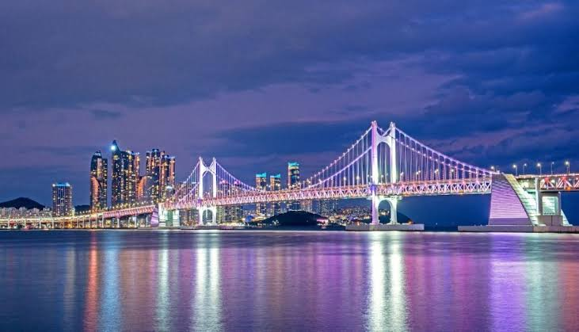
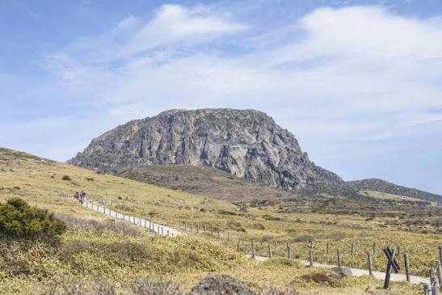
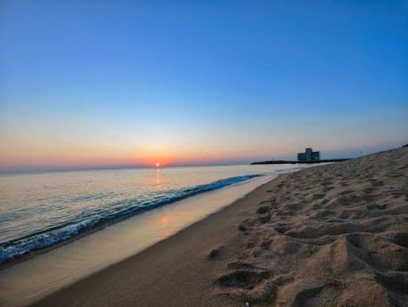
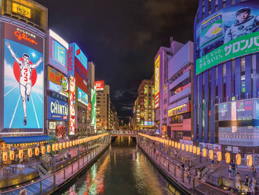
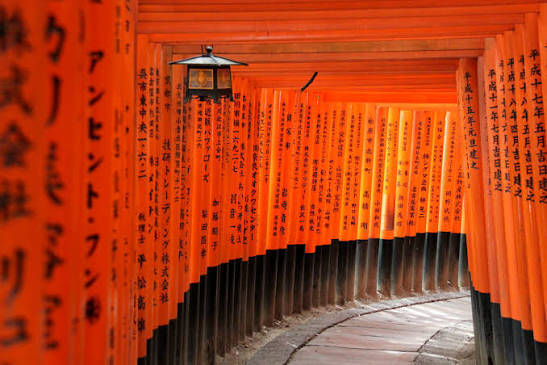
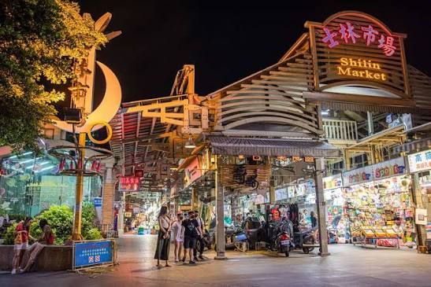
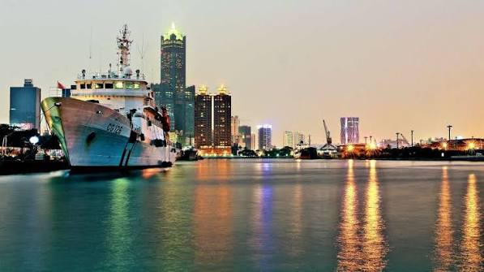

경주
경주 2019
자전거를 빌려 온종일 돌았습니다. 도시 전체가 유적이라 길을 잃어도 어딘가 볼 게 있었습니다. 야경은 동궁과 월지가 압도적.
Trip
서울에서 출발해 한국 · 대만 · 일본의 여덟 도시를 다녀왔습니다. 지도 위의 점이 지금까지 발이 닿은 곳입니다. 점을 누르면 그 도시의 기록으로 내려갑니다.
Map
아직 색이 없는 지역은 가 보지 못한 곳입니다. 천천히 채워 갈 생각입니다.
Travel log
자전거를 빌려 온종일 돌았습니다. 도시 전체가 유적이라 길을 잃어도 어딘가 볼 게 있었습니다. 야경은 동궁과 월지가 압도적.

바다를 보러 갔는데 결국 먹는 데 시간을 다 썼습니다. 광안리에서 본 다리 조명이 아직도 제일 선명하게 남아 있습니다.

렌터카 없이 버스로만 다녀 본 제주. 시간은 두 배 걸렸지만 오름 하나를 천천히 올라간 그 오후가 여행의 전부였습니다.

KTX 두 시간이면 동해가 나온다는 게 아직도 이상합니다. 안목해변에서 커피를 들고 파도만 한 시간 봤습니다.

첫 끼로 라멘을 먹었고 마지막 끼도 라멘이었습니다. 도톤보리의 간판 불빛은 사진으로는 절반도 안 담깁니다.

오사카에서 전철로 넘어간 하루. 후시미이나리의 도리이를 끝까지 올라가 봤는데, 위로 갈수록 사람이 줄어 조용해집니다.

밤마다 야시장을 갔습니다. 습한 공기와 향신료 냄새가 섞인 그 거리 특유의 온도가 있습니다. 온천도 도시 안에 있습니다.

타이베이에서 고속철로 내려간 남쪽 도시. 훨씬 느리고 덜 붐빕니다. 항구에서 본 노을 색이 여행 전체에서 제일 좋았습니다.
Multimedia
여행 도중 찍은 영상입니다.
야시장의 소음이 섞인 현장 녹음. 이어폰으로 들으면 훨씬 낫습니다.
Wishlist
지도를 펼쳐 놓고 보니 채워지지 않은 곳이 더 눈에 들어옵니다. 다음 순서는 대략 이렇습니다.